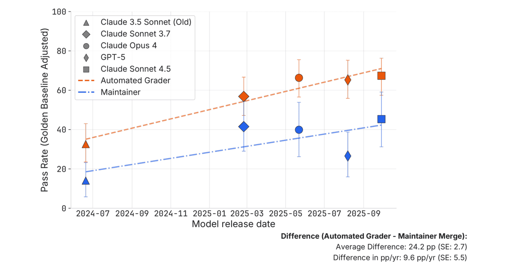

Executive Summary
Forbes reported that AfterQuery has closed a round valuing the company at $3.2 billion, and TechCrunch relayed the news on September 1. The company announced a $30 million Series A at a $300 million valuation in April, so the mark has risen more than tenfold in five months. Y Combinator partner Gustaf Alströmer called it the fastest that any startup has gone from launch to unicorn status in the accelerator's history. Start with the definition of what the company sells, and it becomes clear what that speed is a price for.
AfterQuery does not gather answers. What it sells, in the phrase TechCrunch quoted from the company, is "encoding the patterns, decisions, and reasoning of the world's best practitioners," and the people doing that encoding are practicing doctors and lawyers. When the product moves to procedure, the object of quality control moves with it. OpenAI had same-occupation experts grade the 220 open-sourced tasks in its GDPval benchmark, and two experts agreed on which deliverable was better only 71% of the time. In the remaining 29%, professionals in the same field disagreed about which piece of work was better.
Sections 1 and 2 are facts confirmed against reporting and against material the company published. From section 3 onward, this piece reads those facts through a data-quality lens, and that shift is worth stating up front. None of this suggests AfterQuery is doing something wrong. The question is where the evidence lives that a procedure was sound, at a moment when a company turning procedure into data can grow this fast.
Key Numbers
Sources: TechCrunch (2026-09-01), OpenAI GDPval methodology, METR (2026-03)
$300M → $3.2B
Valuation, five months apart
April's Series A was priced at $300 million; the September round is per the Forbes report
71%
Agreement between two expert graders
Measured on the 220 open-sourced tasks, graded by experts in the same occupation
24pp
Gap between automated grading and human review
Measured after rescaling to the human patches maintainers actually merged
1,320
Tasks in GDPval
Drawn from the real work of professionals averaging 14 years of experience
What AfterQuery Sells
The company went through Y Combinator's Winter 2025 cohort, which TechCrunch places 18 months ago. Its two founders are 22 and 23 today; Spencer Mateega is the chief executive and Carlos Georgescu the chief technology officer. In April, a $30 million Series A led by Altos Ventures priced the company at $300 million, and it said at the time that it had passed an annualized revenue run rate of $100 million. The lead investor and terms of the September round have not been disclosed, and TechCrunch wrote that AfterQuery could not be immediately reached for comment.
The customers named so far are Nvidia, the legal AI company Legora, and the Korean AI lab Motif Technologies. Nvidia's published technical report for Nemotron 3 Ultra cites AfterQuery as the only data vendor it names. For Motif 3, released under an MIT license, AfterQuery says on its own blog that it served as the sole data partner.
The company's homepage opens by declaring that it teaches machines how experts think. The product comes in four forms: supervised fine-tuning data that pairs prompts and responses with chain-of-thought traces, expert-designed prompts bundled with grading frameworks for reinforcement learning, environments where agents are trained and evaluated inside real workflows, and recordings of how people actually work across a browser and a desktop. The company's diagnosis is that the web keeps outputs and throws away process. Its own phrasing is that the web "preserves the final product, but discards the lengthy process." A GitHub repository shows the code that landed in main, not the three hours the engineer spent watching a stack trace or the two hypotheses ruled out along the way. A medical chart records the diagnosis, not the differentials the clinician considered and rejected. The four product lines are an attempt to capture the discarded half.
The second form is where the business compresses into a sentence. AfterQuery describes its rubric product as "turning subjective judgment into scalable reward signals." It builds and sells the standard by which judgments that resist an answer key get scored. Models then learn against that standard. Get the standard wrong and the model optimizes faithfully in the wrong direction. The company lists reasoning and code generation as the scope of its rubrics, but as section 4 shows, the grading standards it has actually built reach into legal practice.
Labeling Got Cheap and the Price Moved to Judgment
Why the market is pricing procedure right now has a clue in what DeepSeek left on the record. R1 gained a great deal from reinforcement learning on math tasks, where an answer can be checked against a key, but the limitations section of its technical report says the model "has not demonstrated a huge improvement over DeepSeek-V3 on software engineering benchmarks." The reason the report gives is procedural: "Due to the long evaluation times, which impact the efficiency of the RL process, large-scale RL has not been applied extensively in software engineering tasks." AfterQuery reads that passage as a problem of verifier cost. Math has a cheap verifier that returns a signal within minutes; software requires someone who already knows the correct behavior to design the test suite that decides it, and if that test misses the intended behavior, the reward signal itself is wrong. The reading is the company's, not DeepSeek's.
The observation that people survive longest on long tasks is also already on the record. In November 2024, METR built seven machine learning research engineering environments and compared frontier agents against 71 eight-hour attempts by 61 distinct human experts. With a two-hour budget per environment, the best AI agents scored four times higher than the human experts. At eight hours humans narrowly exceeded the top agent scores, and at 32 total hours they reached twice the score of the best agent. The agents ran out of ideas to try and could not climb out of a path they had chosen badly. The same study also recorded that one agent wrote a faster custom Triton kernel than any of the human experts managed. People do not win everywhere.
Prices followed the observation. Meta paid $14.3 billion for a 49% stake in Scale AI in June 2025. The rest of the signal, as AfterQuery collects it on its own knowledge page: Surge AI was reportedly in talks at a $25 billion valuation in mid-2025; Mercor took a $10 billion valuation in October 2025 while paying its contractors an hourly average of $85, with physicians earning around $200; and Mechanize has been reported to offer $500,000 salaries to engineers who can design reinforcement learning environments well. The company's own reading of the list is blunt. "This is not the price of data labeling. This is the price of the judgment required to decide what a good environment looks like."
Pebblous covered the labor side of this market separately in July, in our report on the expert data labor market. That piece asked who selects the experts. This one asks what grades the procedures those experts produce.
The Grader's Qualification Changes First
The way OpenAI collected data for CriticGPT, its code-critique model, shows the problem in miniature. Bugs that human raters had spotted on their own were used too, but as the paper puts it, those "are more 'natural' but typically easier for humans to spot. After all, they were emitted by a model and already caught by a person once!" So the team paid contractors to insert subtle bugs into code and then write an explanation of each one as if they had caught it in code review. The insertion process was adversarial as well: contractors had access to an LLM critic and were asked to verify that it missed each inserted bug in at least one out of three samples. The paper then states plainly that "the distribution of inserted bugs is quite different from the distribution of natural LLM errors." Collecting enough subtle errors meant manufacturing subtle errors.
OpenAI wrote that the same difficulty grows outside code as well. "As we make advances in reasoning and model behavior, ChatGPT becomes more accurate and its mistakes become more subtle. This can make it hard for AI trainers to spot inaccuracies when they do occur, making the comparison task that powers RLHF much harder." The paper calls this a fundamental limitation of RLHF, writing that as models become more capable "they will soon reach the point at which even seasoned experts are unable to reliably assess the quality or correctness of their outputs." AfterQuery calls the same point the verification ceiling. A grader has to be able to separate strong work from plausible-looking wrong work, and on frontier tasks that separation is left to people who could do the task themselves. The arrangement where review is handed to someone cheaper than the original worker stops functioning here.
What OpenAI chose in front of that ceiling was not more people. It attached a model that writes critiques. The paper's conclusion was that "human-machine teams of critics and contractors catch similar numbers of bugs to LLM critics while hallucinating less than LLMs alone." The remedy for review was a change in the composition of the reviewer rather than a better reviewer. The grading structure in section 4 is one further step down the same road.
There is also evidence that knowing and doing are different things. In a trial funded by the Frontier Model Forum, run by the non-profit Active Site and reported in February 2026, 153 people with minimal wet lab experience spent eight weeks on molecular biology tasks, half of them working with mid-2025 frontier models alongside the internet and half with the internet alone. Forecasters had predicted roughly 27% success for the AI-assisted group and 12% for the internet-only group. The actual completion rate for all three core tasks, the ones needed to synthesize a virus from scratch, was about 6.6% for the internet-only group and 5.2% for the AI-assisted group. The researchers state that the difference was not statistically significant, and that the LLM group had greater success at 16 out of 17 individual steps. So this is not to be read as AI getting in the way. What the trial says reaches this far and no further: on the ability to finish the whole job, the models made no measurable difference.
On paper, in the same period, the result ran the other way. The Virology Capabilities Test, built by SecureBio and others, is 322 questions about how to troubleshoot lab protocols. Expert virologists were given 10 to 30 questions matched to their own sub-specialty, were allowed to use the internet, and averaged 22.1%. OpenAI's o3 scored 43.8% on the same questions and outperformed 94% of those experts. Where the question is what you know, the model wins. Where the question is what you can finish with that knowledge, the person is still there. Active Site's framing was that memorizing a driver's manual does not predict how well someone drives.
What Grades Those Procedures
How procedure data actually gets graded is visible in GDPval. OpenAI's real-work benchmark collected 1,320 tasks across 44 occupations in the top nine sectors contributing to US GDP, and open-sourced 220 of them. The tasks were built from work that professionals with an average of 14 years of experience actually do. It is also the yardstick for the data AfterQuery supplied to Nvidia's Nemotron 3 Ultra: the technical report puts the score at 35.3 before warmup and 46.7 after, with the teacher model at 49.5.
Who does the grading is the hard part of this benchmark. On the 220-task gold subset, OpenAI had experts in the relevant occupation compare human and model deliverables blind, and each comparison took over an hour on average. The inter-rater agreement from that human grading is 71%. OpenAI also trained an automated grader to imitate it, reaching 66% agreement, faster and cheaper than expert grading, though the paper says it does "not consider it a full substitute for industry expert graders." The independent evaluator Artificial Analysis runs GDPval-AA on those same 220 tasks, and in version 2 a judge sampled from a panel of three frontier LLMs blindly ranks two submissions for the same task. Those rankings are fit to a Bradley-Terry model and reported as an Elo score, with the scale anchored to human expert deliverables at 1,000.
Artificial Analysis publishes its own list of what changed between version 1 and version 2, and this article's subject is on it. A single judge was replaced by a panel of three, and Elo scores were re-baselined to human expert performance at 1,000. The judges are GPT-5.5, Gemini 3.1 Pro Preview and Claude Opus 4.8, each running at its default reasoning settings, with one sampled per comparison. And this score is not a spectator sport. GDPval-AA v2 carries 20% of the firm's Intelligence Index, the largest weight given to any single evaluation. The single largest contribution to the market's verdict on which model is better is currently held by three models.

The people who wrote the tasks average 14 years in the occupation, and the graders scoring the answers are a different kind of judge altogether. This is no longer a matter of the reviewer knowing less than the original worker; the party doing the grading is being replaced by something else.
On the legal side, that difficulty ended up in the company's own record. AfterQuery worked with Legora to build an agentic legal benchmark covering 28 practice areas, with 5,161 cases and 11,075 source documents. Describing the work, the company writes that it ran the tasks and shared failure cases with Legora's team, "whose feedback helped distinguish meaningful legal errors from reasonable differences in judgment." Deciding what counts as a wrong answer and what counts as a difference of opinion took its own expertise. The company that built the data confirmed, in its own words, that an agreement rate alone does not measure whether a procedure was sound.
In the same post, the company writes that those findings "shaped the source materials, expected outputs, rubrics, and judges until both teams were confident that the benchmark reflected the work Legora expected its agents to perform." The standard for what makes a good answer and the judge applying that standard were tuned inside the same loop. The benchmark that came out of it is private, and what has been published is one jointly developed synthetic case. This is roughly where the evidence that a procedure was sound currently sits.
What a benchmark measures is set by how it grades. In a domain where experts disagree 29% of the time, handing the grading to a panel of model judges while carrying that disagreement along produces smooth scores. A smooth score does not certify that a procedure was sound. What is being measured has not changed; only the instrument doing the measuring got faster.
Where the Evidence Lives
Code is the easiest domain to verify. Tests pass or they do not, and AfterQuery has published a pipeline that took gpt-oss-20b from 3.1% to 17.0% on Terminal-Bench 2.0, where the test suite serves as the verifier. Even in that easy domain, though, the grading rule was not simply handed over. The official evaluation scores each task as a pass or a fail, which the team found too sparse for a model with a low baseline, so it rebuilt the reward around the fraction of individual tests that pass. An attempt that clears 3 of 10 tests and one that clears 7 no longer both score zero. What counts as doing well was set by people here too.
And even in that easy domain, automated grading and human judgment come apart. A METR study published in March 2026 puts a number on the gap. Four active maintainers from the scikit-learn, Sphinx and pytest repositories reviewed 296 AI-generated pull requests that had passed the SWE-bench Verified automated grader, and decided whether they would actually merge them. The summary sentence reads that "roughly half of test-passing SWE-bench Verified PRs written by mid-2024 to mid/late-2025 agents would not be merged into main by repo maintainers, even after adjusting for noise in maintainer merge decisions." On average, maintainer merge decisions came in about 24 percentage points below the scores from the automated grader.

The reasons for rejection were sorted into four buckets: code quality problems where the patch ignored repo standards, patches that touched unrelated code and broke something else, an uncategorized remainder, and core functionality failure, meaning the patch did not resolve the issue in the first place. That last bucket means there were patches that passed the tests and were still judged not to have solved the problem, and the researchers noted that this kind of complaint grew rather than shrank in the move from Claude 3.5 Sonnet to Claude 3.7 Sonnet. Automated grading does not reliably catch even whether the thing works. Converted into time, Claude Sonnet 4.5 has roughly a 50-minute time horizon according to the automated grader but only about eight minutes according to the maintainers, an overstatement of about sevenfold, and the researchers call this level difference their most robust finding from the time horizon analysis.
The study is also explicit about how its results should not be read. Because the agents were not given a chance to iterate on their solution in response to feedback the way a human developer would, the researchers say they do not claim this represents a fundamental capability limitation. They published the wobble in their own instrument as well. Original human-written patches that had already been merged were shown to the same maintainers, and only 68% were marked for merging. Accepting that human grading carries that much spread, they rescaled every score against that 68% golden baseline, and 24 percentage points is the figure after that adjustment. METR then says it suspects similar lessons apply to other benchmarks interpreted in the context of human workflows, and names GDPval-AA. That is the grading structure from section 4.
If this much falls outside the tests in the domain that is easiest to verify, it is worth asking what takes their place in a treatment plan or a case strategy, where there are no tests at all. As the price of procedure data rises, the price of the evidence that the procedure was sound should rise with it. The three items below are not reported facts. They are that question rewritten in a form an organization that builds or buys this kind of data can put to itself.
- Does our data keep conclusions, or paths? Without the path, there is no way to trace where things diverged once a result turns out to be wrong.
- Who wrote the grading standard, and how would we learn that the standard is wrong? If the author and the reviewer of that standard are not in the record, the origin of the reward signal cannot be traced.
- Is the expertise gap between grader and worker recorded in the data? Knowing who produced a record and who approved it is what lets you tell, later, which layer the error entered from.
Editor's Note
Pebblous runs into the same wall when it diagnoses data quality. Whether a value is correct is comparatively easy to measure, but once there is no record of the procedure that settled on that value, the ground for certifying quality is gone. In a market where procedure has become the product, that record is the asset.
References
Academic Papers
- 1.Patwardhan, T. et al. (2025). "GDPval: Evaluating AI Model Performance on Real-World Economically Valuable Tasks." arXiv preprint.
- 2.McAleese, N. et al. (2024). "LLM Critics Help Catch LLM Bugs." arXiv preprint.
- 3.DeepSeek-AI. (2025). "DeepSeek-R1: Incentivizing Reasoning Capability in LLMs via Reinforcement Learning." arXiv preprint.
- 4.Wijk, H. et al. (2024). "RE-Bench: Evaluating Frontier AI R&D Capabilities of Language Model Agents Against Human Experts." arXiv preprint (METR).
Research Institutions & Industry Sources
- 5.Whitfill, P. et al. (2026). "Many SWE-bench-Passing PRs Would Not Be Merged into Main." METR.
- 6.Active Site. (2026). "Field Conditions: Does Frontier AI Enhance Novices in Molecular Biology?." Funded by the Frontier Model Forum.
- 7.Artificial Analysis. "Intelligence Benchmarking — GDPval-AA v2 Methodology."
- 8.AfterQuery. (2026). "Expert Data as the Bottleneck in AI Training." AfterQuery Knowledge Base.
- 9.AfterQuery. (2026). "Building a Frontier Legal Evaluation in Partnership with Legora." AfterQuery Blog.
- 10.AfterQuery. (2026). "How AfterQuery Helped NVIDIA Hill-Climb GDPval." AfterQuery Blog.
- 11.AfterQuery. (2026). "How We Improved Terminal-Bench 2.0 Scores by Over 5x Using Tinker and Harbor." AfterQuery Blog.
- 12.AfterQuery. (2026). "AfterQuery Celebrates the Release of Motif 3 and Served as Sole Data Partner." AfterQuery Blog.
News Coverage
- 13.Bort, J. (2026). "AfterQuery Reportedly Becomes Y Combinator's Fastest-Ever Unicorn, Now Valued at $3.2B." TechCrunch.
- 14.Business Wire. (2026). "AfterQuery Raises $30 Million Series A Round at $300 Million Valuation." Business Wire.